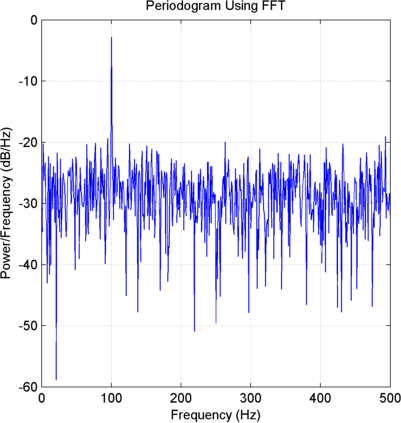
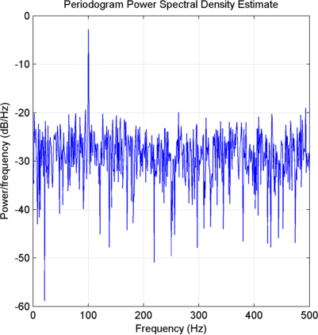
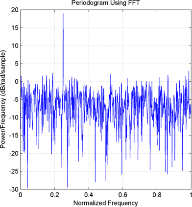
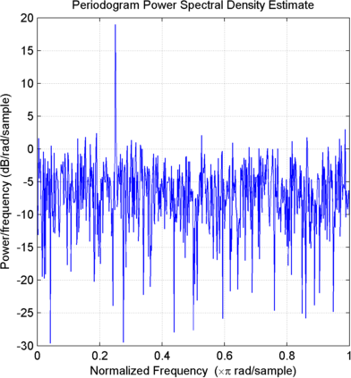
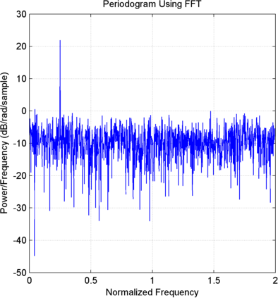
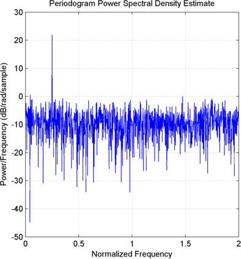

Accelerating the pace of engineering and science
Documentation Center |
Power Spectral Density Estimates Using FFT
These examples show how to obtain nonparametric power spectral density (PSD) estimates equivalent to the periodogram using fft. The examples show you how to properly scale the output of fft for even-length inputs, for normalized frequency and hertz, and for one- and two-sided PSD estimates.
Obtain the periodogram for an even-length signal sampled at 1 kHz using both fft and periodogram. Compare the results.
Create a signal consisting of a 100-Hz sine wave in N(0,1) additive noise. The sampling frequency is 1 kHz. The signal length is 1000 samples. Use the default settings of the random number generator for reproducible results.
rng default;
Fs = 1000;
t = linspace(0,1,1000);
x = cos(2*pi*100*t)+randn(size(t));Obtain the periodogram using fft. The signal is real-valued and has even length. Because the signal is real-valued, you only need power estimates for the positive or negative frequencies. In order to conserve the total power, multiply all frequencies that occur in both sets — the positive and negative frequencies — by a factor of 2. Zero frequency (DC) and the Nyquist frequency do not occur twice. Plot the result.
N = length(x); xdft = fft(x); xdft = xdft(1:N/2+1); psdx = (1/(Fs*N)).*abs(xdft).^2; psdx(2:end-1) = 2*psdx(2:end-1); freq = 0:Fs/length(x):Fs/2; plot(freq,10*log10(psdx)); grid on; title('Periodogram Using FFT'); xlabel('Frequency (Hz)'); ylabel('Power/Frequency (dB/Hz)');

Compute and plot the periodogram using periodogram. Show that the 2 results are identical.
figure; [psdestx,Fxx] = periodogram(x,rectwin(length(x)),length(x),Fs); plot(Fxx,10*log10(psdestx)); grid on; xlabel('Hz'); ylabel('Power/Frequency (dB/Hz)'); title('Periodogram Power Spectral Density Estimate'); max(psdx'-psdestx)

Use fft to produce a periodogram for an input using normalized frequency.
Create a signal consisting of a sine wave in N(0,1) additive noise. The sine wave has an angular frequency of π/4 radians/sample. Use the default settings of the random number generator for reproducible results.
rng default;
n = 0:999;
x = cos(pi/4*n)+randn(size(n));Obtain the periodogram using fft. The signal is real-valued and has even length. Because the signal is real-valued, you only need power estimates for the positive or negative frequencies. In order to conserve the total power, multiply all frequencies that occur in both sets — the positive and negative frequencies — by a factor of 2. Zero frequency (DC) and the Nyquist frequency do not occur twice. Plot the result.
N = length(x); xdft = fft(x); xdft = xdft(1:N/2+1); psdx = (1/(2*pi*N)).*abs(xdft).^2; psdx(2:end-1) = 2*psdx(2:end-1); freq = 0:(2*pi)/N:pi; plot(freq./pi,10*log10(psdx)); grid on; title('Periodogram Using FFT'); xlabel('Normalized Frequency'); ylabel('Power/Frequency (dB/rad/sample)');

Compute and plot the periodogram using periodogram. Show that the 2 results are identical.
figure; [psdestx,Fxx] = periodogram(x,rectwin(length(x)),length(x)); plot(Fxx./pi,10*log10(psdestx)); xlabel('Hz'); ylabel('Power/Frequency (dB/Hz)'); title('Periodogram Power Spectral Density Estimate'); xlabel('Normalized Frequency'); grid on; ylabel('Power/Frequency (dB/rad/sample)'); max(psdx'-psdestx)

Use fft to produce a periodogram for a complex-valued input with normalized frequency.
Create the complex-valued signal. The signal is a complex exponential with an angular frequency of π/4 radians/sample in complex-valued N(0,1) noise. Set the random number generator to the default settings for reproducible results.
rng default;
n = 0:999;
x = exp(1j*pi/4*n)+1/sqrt(2)*randn(size(n))+1j*1/sqrt(2)*randn(size(n));Use fft to obtain the periodogram. Because the input is complex-valued, obtain the periodogram from (-π,π] radians/sample. Plot the result.
N = length(x); xdft = fft(x); psdx = (1/(2*pi*N)).*abs(xdft).^2; freq = 0:(2*pi)/N:2*pi-(2*pi)/N; plot(freq./pi,10*log10(psdx)); grid on; title('Periodogram Using FFT'); xlabel('Normalized Frequency'); ylabel('Power/Frequency (dB/rad/sample)');

Use periodogram to obtain and plot the periodogram. Compare the PSD estimates.
[psdestx,Fxx] = periodogram(x,rectwin(length(x)),length(x),'twosided'); figure; plot(Fxx./pi,10*log10(psdestx)); grid on; xlabel('Normalized Frequency'); ylabel('Power/Frequency (dB/rad/sample)'); title('Periodogram Power Spectral Density Estimate'); max(psdx'-psdestx)
